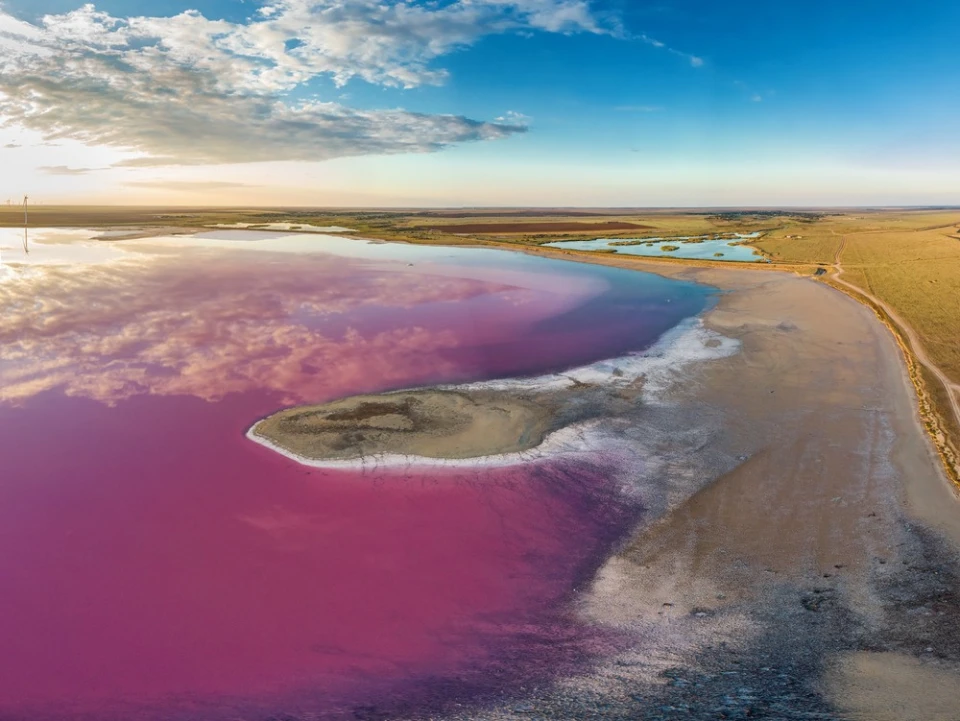
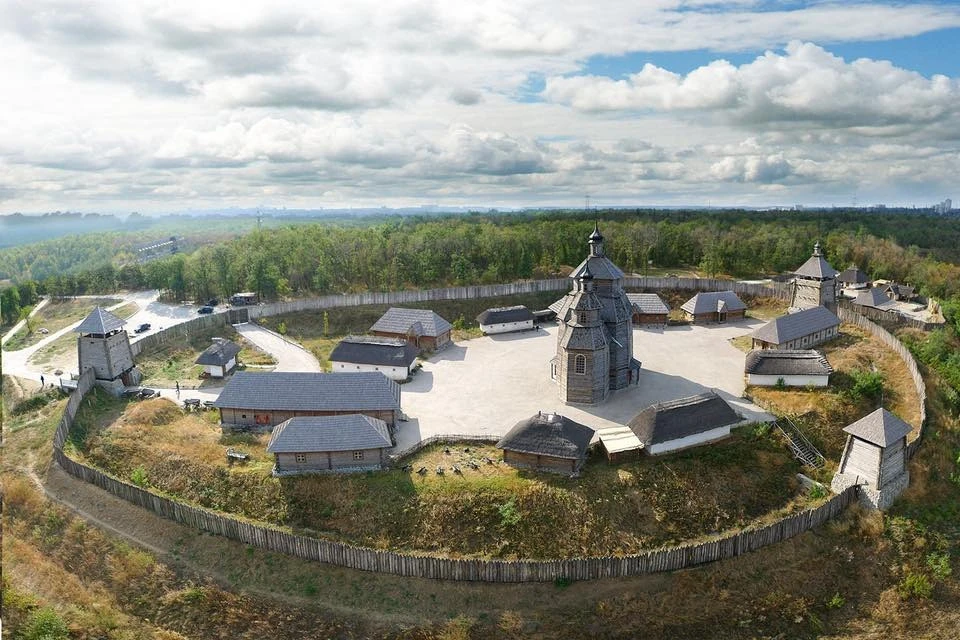

Лемурійське озеро - відоме як "рожеве озеро" або херсонське «Мертве
море» є одним із природних
див Херсонської
області, що розташовано біля села Григорівка.
При огляді карти для виявлення місцезнаходження рожевого озера помітно, що поруч розташована велика
водойма - Сиваш. Їх розділяє тонка смуга суходолу.
Озеро вражає своїм рожевим кольором води, який утворюється завдяки великій кількості специфічних видів
водоростей Дуналіелла та бактерій. Це природне явище,
тому відтінок може змінюватися в залежності від
умов
середовища. Не менш важливо, що озеро відноситься до солоних водойм, адже містить велику кількість мінералів
та солей. Тому за корисними властивостями і солоністю його часто порівнюють із Мертвим морем в Ізраїлі.
Озеро є важливим в екологічному аспекті, як унікальний природний об'єкт.
Рожеве озеро стало популярним місцем для туристів і фотографів, які приїжджають, щоб насолодитися природньою
красою цього об'єкта та зробити унікальні фотознімки.

Одеські катакомби
Одеські катакомби - це унікальна підземна мережа, розташована під Одесою. Ця система підземних
тунелів та проходів виникла під час
будівництва міста в XIX-XX столітті.
Її використовувались для видобутку будівельних
матеріалів, зокрема, каменю-черепашнику. Пізніше, під час війни, катакомби стали притулком для біженців та
місцем проведення революційних зборів.
Підземна система Одеських катакомб вражає своїм розмаїттям та розміром – загальна їх протяжність становить
понад 3000 км. Щоб зрозуміти масштаби, слід зазначити,
що Паризькі катакомби мають максимальну
протяжність у 300 км, тоді як Римські - лише 150-170 км.
Підземелля приваблюють туристів з усього світу. Екскурсії в підземний світ надають можливість дізнатися
більше про історію та архітектуру цього унікального об'єкта та відчути
неповторну атмосферу. Однак, не
ризикуйте життям і ніколи не спускайтеся в катакомби без супроводу кваліфікованого екскурсовода.

Острів Хортиця
Острів Хортиця — це неперевершена природна та історична перлина, що розташована на річці
Дніпро в
межах
Запорізької області. Острів має загальну площу близько 2360 гектарів та
є символом українського
козацтва.
Він
довго служив важливим козацьким центром, був місцем формування та тренування військ запорізьких.
На острові проводилися розкопки, які виявили археологічні скарби, що свідчать про населення території ще
з
доісторичних часів. Знахідки включають артефакти від доби енеоліту, тобто
5 тис. до н.е. Хортиця має
прекрасні
природні пейзажі, включаючи ліси та пляжі на березі Дніпра. Це ідеальне місце для прогулянок,
велосипедних
поїздок та водних видів спорту. Крім того,
тут розташований Національний музей історії запорозького
козацтва,
де можна побачити численні пам'ятки, присвячені козацькому минулому.
Загалом, острів Хортиця вражає своєю красою, історією та можливостями для відпочинку і навчання. До того
ж він
чудово інтегрований в структуру Запоріжжя, тому туди досить легко потрапити.

Додаткове завдання
Maecenas lacinia felis nec placerat sollicitudin. Quisque placerat dolor at scelerisque
imperdiet.
Phasellus tristique felis dolor.
Maecenas elementum in risus sed condimentum. Duis convallis ante ac tempus maximus. Fusce
malesuada
sed
velit ut dictum. Morbi faucibus vitae orci at euismod. Integer auctor augue in
erat vehicula, quis
fermentum ex
finibus.
Mauris pretium elit a dui pulvinar, in ornare sapien euismod. Nullam interdum nisl ante, id feugiat
quam
euismod commodo. Sed ultrices lectus ut iaculis rhoncus. Aenean non dignissim justo, at
fermentum
turpis.
Sed
molestie, ligula ut molestie ultrices, tellus ligula viverra neque, malesuada
consectetur diam
sapien
volutpat
risus. Quisque eget tortor lobortis, facilisis metus eu,
elementum est. Nunc sit amet erat quis ex
convallis
suscipit. ur ridiculus mus.